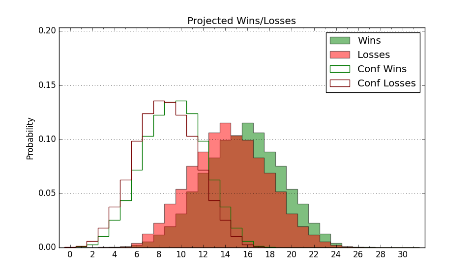

| Home | Game Probabilities | Conferences | Preseason Predictions | Odds Charts | NCAA Tournament |
| City: | Amherst, Massachusetts | |
| Conference: | Atlantic 10 (1st)
| |
| Record: | 0-0 (Conf) 1-3 (Overall) | |
| Ratings: | Comp.: 4.9 (110th) Net: 11.9 (89th) Off: 105.1 (160th) Def: 93.2 (48th) SoR: 0.0 (257th) |
| Remaining | ||||||
|---|---|---|---|---|---|---|
| Date | Opponent | Win Prob | Pred. | |||
| 11/23 | (N) Temple (141) | 59.1% | W 75-72 | |||
| 11/24 | (N) Florida St. (108) | 49.4% | L 76-77 | |||
| 11/27 | @ Harvard (248) | 66.1% | W 75-70 | |||
| 12/1 | NJIT (359) | 96.9% | W 82-58 | |||
| 12/4 | Central Connecticut (271) | 88.6% | W 79-64 | |||
| 12/7 | UMass Lowell (126) | 70.1% | W 80-73 | |||
| 12/18 | Northeastern (180) | 79.8% | W 81-71 | |||
| 12/21 | (N) Arizona St. (49) | 25.2% | L 68-76 | |||
| 12/31 | @ Saint Joseph's (123) | 40.3% | L 73-75 | |||
| 1/4 | Richmond (161) | 77.0% | W 75-67 | |||
| 1/8 | Dayton (33) | 31.7% | L 71-77 | |||
| 1/11 | @ George Mason (69) | 21.1% | L 67-77 | |||
| 1/15 | @ Fordham (164) | 50.4% | W 74-73 | |||
| 1/19 | La Salle (165) | 77.6% | W 79-70 | |||
| 1/22 | George Washington (117) | 67.4% | W 79-74 | |||
| 1/29 | @ Rhode Island (137) | 43.2% | L 76-78 | |||
| 2/1 | @ Duquesne (124) | 40.3% | L 71-74 | |||
| 2/4 | Saint Louis (125) | 69.9% | W 83-77 | |||
| 2/9 | @ La Salle (165) | 50.5% | W 75-74 | |||
| 2/12 | Davidson (127) | 70.2% | W 75-69 | |||
| 2/15 | St. Bonaventure (120) | 68.9% | W 74-69 | |||
| 2/19 | @ VCU (53) | 16.2% | L 65-77 | |||
| 2/22 | @ George Washington (117) | 37.8% | L 75-78 | |||
| 3/1 | Rhode Island (137) | 72.1% | W 80-73 | |||
| 3/5 | @ St. Bonaventure (120) | 39.4% | L 70-73 | |||
| 3/8 | Loyola Chicago (115) | 67.0% | W 76-71 | |||
| Previous | Game Score | |||||
| Date | Opponent | Win Prob | Result | Off | Def | Net |
| 11/4 | New Hampshire (348) | 94.8% | W 103-74 | 10.2 | -1.9 | 8.3 |
| 11/8 | @West Virginia (58) | 18.2% | L 69-75 | -6.3 | 13.1 | 6.8 |
| 11/13 | Louisiana Tech (103) | 62.5% | L 66-76 | -14.4 | -9.5 | -23.8 |
| 11/16 | Hofstra (136) | 71.8% | L 71-75 | -9.2 | -3.0 | -12.2 |
| Stats & Trends | |||||
|---|---|---|---|---|---|
| Current | Day | Week | Month | Season | |
| Composite | 4.9 | +0.5 | +0.9 | +3.1 | +3.1 |
| Comp Rank | 110 | +2 | +5 | +20 | +20 |
| Net Efficiency | 11.9 | +1.6 | -12.3 | -- | -- |
| Net Rank | 89 | +13 | -53 | -- | -- |
| Off Efficiency | 105.1 | +1.0 | -17.0 | -- | -- |
| Off Rank | 160 | +18 | -120 | -- | -- |
| Def Efficiency | 93.2 | +0.6 | +4.7 | -- | -- |
| Def Rank | 48 | +7 | +40 | -- | -- |
| SoS Rank | 200 | +3 | -22 | -- | -- |
| Exp. Wins | 15.6 | +0.3 | -0.5 | +0.2 | +0.2 |
| Exp. Conf Wins | 9.3 | +0.2 | +0.5 | +1.0 | +1.0 |
| Conf Champ Prob | 4.5 | +1.0 | +1.2 | +1.8 | +1.8 |

| Advanced Stats | ||
|---|---|---|
| Stat | Value | Rank |
| Off Eff FG % | 0.540 | 101 |
| Off Ast Ratio | 0.174 | 47 |
| Off ORB% | 0.275 | 194 |
| Off TO Rate | 0.140 | 127 |
| Off FT Ratio | 0.249 | 312 |
| Def Eff FG % | 0.441 | 59 |
| Def Ast Ratio | 0.121 | 85 |
| Def ORB% | 0.321 | 264 |
| Def TO Rate | 0.188 | 61 |
| Def FT Ratio | 0.368 | 202 |